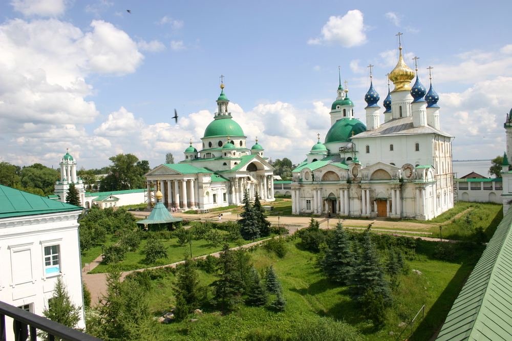
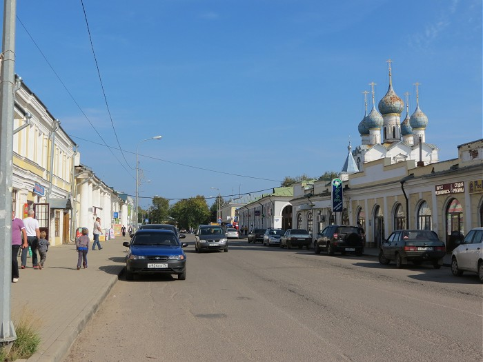
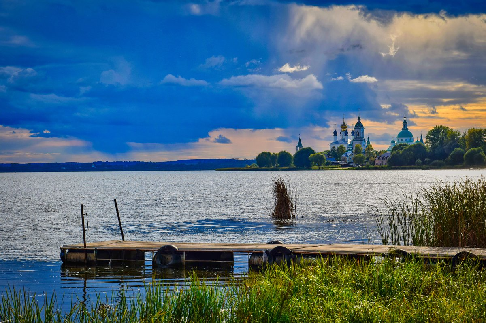
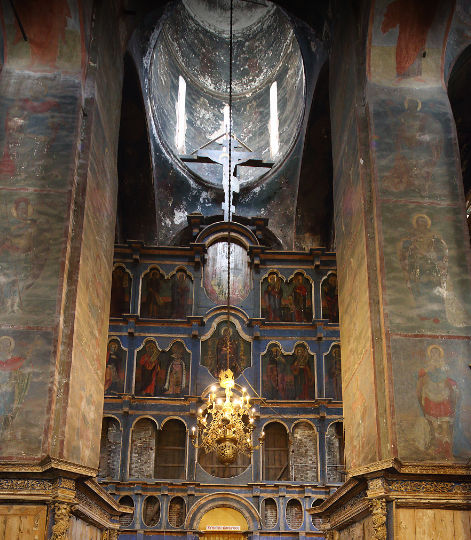
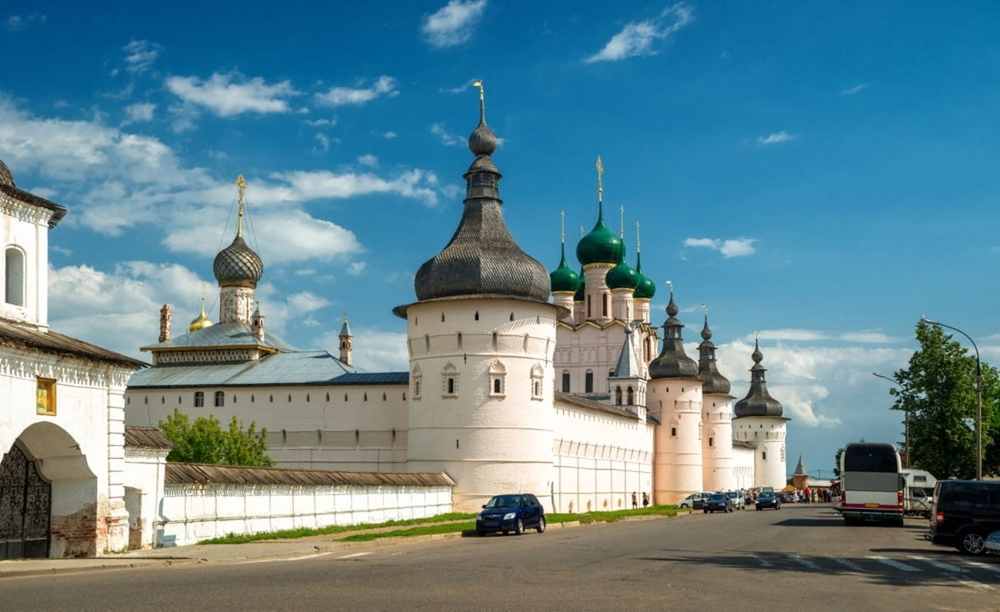
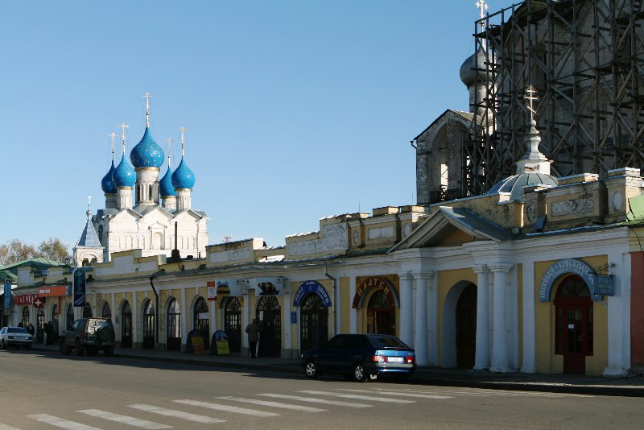
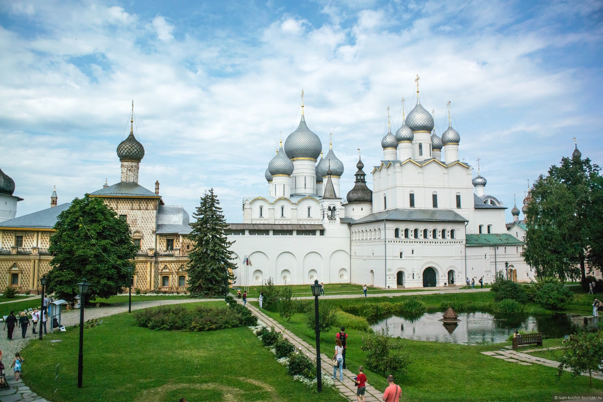
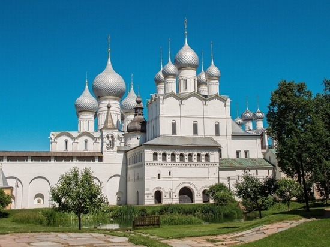
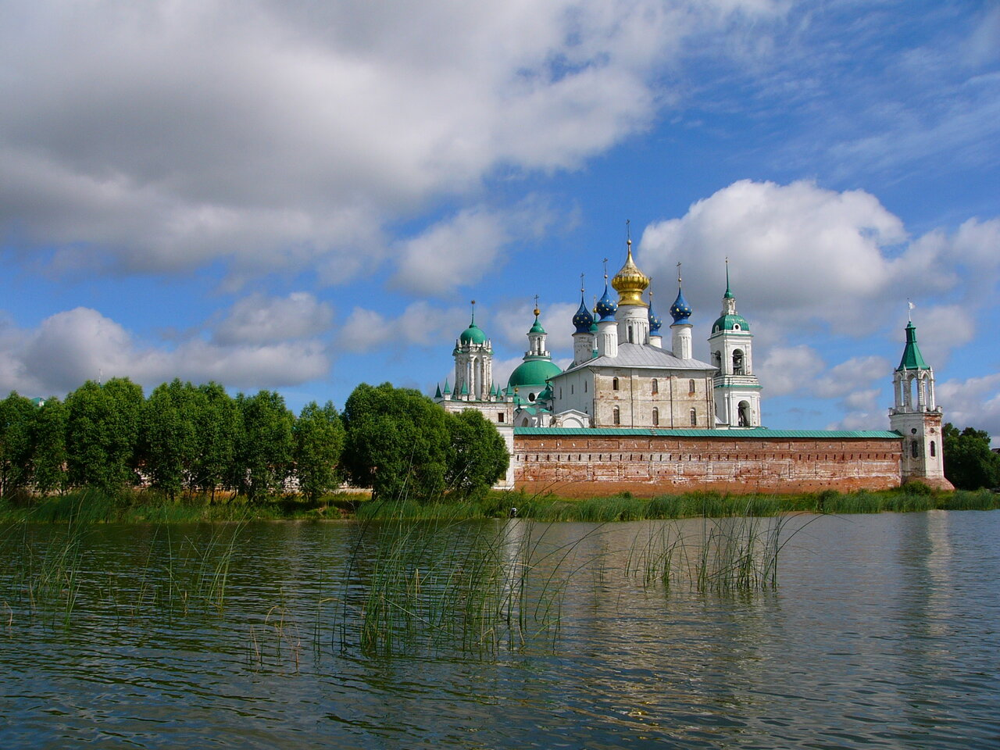
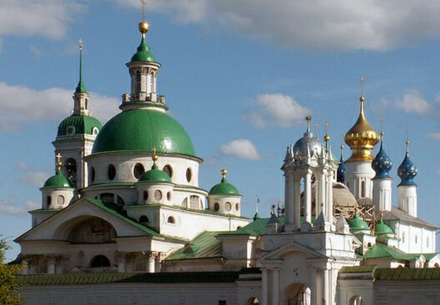

Интересные маршруты Ростова Великого
Пеший маршрут по Ростову Великому: "Следами истории и легенд"
Продолжительность: 3-4 часа
Транспорт: Пешком
Маршрут:
Спасо-Яковлевский монастырь (1 час):
Осмотр величественных храмов, в том числе знаменитого Спасо-Яковлевского собора, где похоронен преподобный Яков, основатель монастыря. Прогулка по монастырской территории, где можно увидеть древние кельи, часовни и другие исторические постройки. Посещение музея, где представлена история монастыря и его святыни.
Улица Большая Островная (30 минут):
Прогулка по живописной улице, ведущей к озеру Неро. Осмотр старинных купеческих домов, многие из которых сохранили свою первоначальную архитектуру. Посещение одного из кафе или ресторанов на улице, чтобы попробовать местную кухню.
Озеро Неро (1 час):
Прогулка по набережной, откуда открываются прекрасные виды на озеро и город. Возможность прокатиться на лодке или катамаране по озеру. Посещение Ростовского музея-заповедника, расположенного на острове в центре озера.
Успенский собор (30 минут):
Осмотр величественного собора, являющегося символом города и одним из старейших храмов России. Посещение музея-ризницы, где выставлены ценные иконы и церковная утварь. Прогулка по территории собора, где можно полюбоваться его архитектурой и декоративными элементами.
Кремль (30 минут):
Прогулка по крепостным стенам, с которых открываются панорамные виды на город. Осмотр сохранившихся оборонительных сооружений, башен и ворот. Возможность посетить музей истории Ростова Великого, расположенный на территории кремля.
Финиш: Возвращение к началу маршрута.
Дополнительные точки:
Дом-музей Ф. И. Тютчева: возможность узнать о жизни и творчестве великого русского поэта. Музей деревянного зодчества: знакомство с традиционной архитектурой Русского Севера. Музей истории Ростовской епархии: погружение в историю православной церкви на территории города.
Советы:
Лучшее время для посещения Ростова Великого – с апреля по октябрь. Для комфортного пешего маршрута рекомендуется надеть удобную обувь. Не забудьте взять с собой воду и перекус. Внимательно изучите расписание работы музеев и церквей перед посещением.
Этот маршрут позволит вам познакомиться с богатой историей и культурой Ростова Великого, окунуться в атмосферу древнего города и насладиться его красотой.
Пеший маршрут по Ростову Великому: От легенд к красоте
Общее время: 3-4 часа
Маршрут:
Начало маршрута: Торговые ряды (1 час)
Пройдитесь по красочным рядам, полюбуйтесь архитектурой и атмосферой.
Ростовский кремль (1 час)
Прогуляйтесь по территории кремля, посетите Успенский собор, полюбуйтесь панорамным видом на город.
Ростовский музей-заповедник (по желанию)
Посетите музей, чтобы узнать больше о истории и культуре Ростова Великого.
Ростовское озеро (1 час)
Прогуляйтесь по берегу озера, насладитесь красотой природы, сделайте фотографии.
Церковь Димитрия, митрополита Ростовского (30 минут)
Полюбуйтесь старинной церковью, узнайте историю ее создания.
Конец маршрута: Торговые ряды (30 минут)
Покушайте в одном из кафе или ресторанов на территории Торговых рядов.
Советы:
Лучшее время для прогулки: Весна, лето или осень. Одежда: Удобная обувь, легкая одежда по погоде. Еда и напитки: Возьмите с собой воду и легкий перекус. Фотоаппарат: Не забудьте запечатлеть красоту города! Дополнительная информация: В Ростове Великом много музеев и достопримечательностей, поэтому, если у вас есть больше времени, вы можете добавить в маршрут посещение музея-заповедника, музея истории города или других интересных мест.